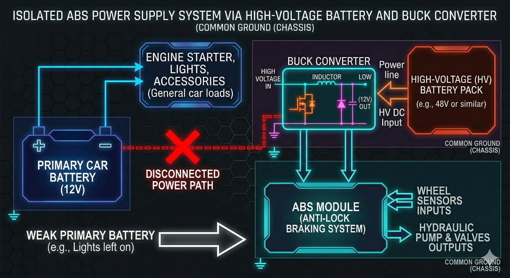
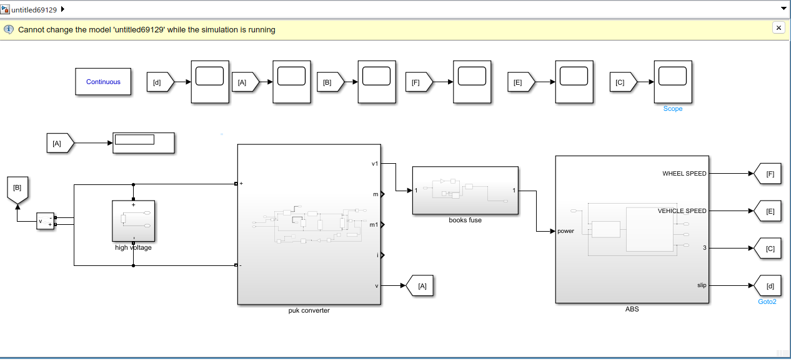
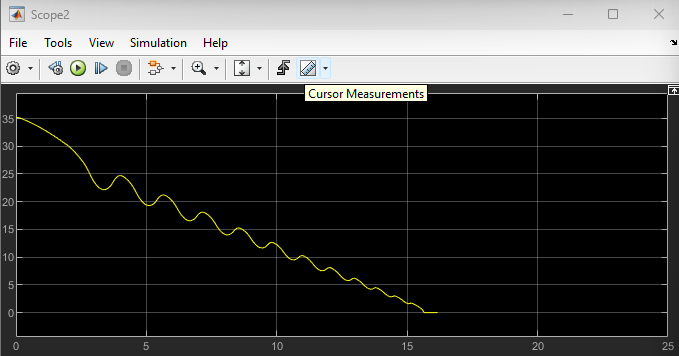

In recent years, the Anti-lock Braking System (ABS) has become one of the most important vehicle safety systems.
ABS prevents wheel lock-up during emergency braking and helps drivers maintain steering control.
The system depends on wheel speed sensors, hydraulic control units, and electronic control modules.
However, voltage instability can affect ABS performance and create dangerous braking conditions.
Our project focuses on solving this issue using a dedicated stabilized power supply.
The core idea of project is to enhance the reliability of the Anti-lock Braking System (ABS)
by solving its vulnerability to battery voltage drops.
The primary reason is the critical vulnerability of current Anti-lock Braking Systems (ABS) to power instability. Standard ABS units are highly sensitive to voltage fluctuations.
When a vehicle's 12V battery is weak or under high auxiliary load, the system can suffer from response lags or system freezing.
This project was chosen to develop a stable alternative power source that ensures the ABS remains functional even when battery voltage drops.
ECU Voltage Sensitivity & Instability: The core issue lies in the high sensitivity of the ABS Electronic Control Unit (ECU) to voltage fluctuations
When a sudden Voltage Drop occurs—caused by high auxiliary loads or a weak 12V battery—the system's logic and processing capabilities are compromised.

The primary aim of this project is to enhance the operational reliability and functional continuity of the Anti-lock Braking System (ABS) by developing a stabilized power architecture. This is achieved by integrating a dedicated DC/DC Buck Converter to interface the ABS unit with the vehicle's High-Voltage (HV) system, ensuring a constant power supply regardless of 12V battery fluctuations.
The ABS model in MATLAB Simulink represents vehicle and wheel dynamics while considering nonlinear tire–road interaction. Its main objective is to maintain the slip ratio within the optimal range (0.1–0.2) to prevent wheel lock and maximize traction. Wheel speed sensors send data to the ECU, which adjusts brake pressure through actuators. Simulink supports control methods such as Bang-Bang and PID control and provides outputs like vehicle speed, wheel speed, slip ratio, and brake force. This framework enables safe, accurate, and cost-effective testing of system stability, control performance, and controller tuning before real-world implementation.
.


The relationship between (Slip & Time)
The relationship between (Vehicle speed & Time)
The relationship between (Input voltage & Time)
The relationship between (Wheel speed & Time)
The relationship between (Stopping distance & Time)
The relationship between (Output voltage & Time)
ωv = V / R (equals the wheel angular speed if there is no slip)
ωv = Vv / Rr
slip = 1 - (ωw / ωv)
ωv = Vehicle speed / wheel radius
Vv = Vehicle linear velocity
Rr = Wheel radius
ωw = Wheel angular velocity
Slip ratio is 0 when wheel and vehicle speeds are equal, and equals 1 when the wheel is fully locked. The optimal slip is about 0.2, meaning the wheel rotates at ~80% of its normal speed under no braking. This level maximizes tire–road grip and reduces stopping distance using available friction.
Matlab/Simulink is a powerful tool for modeling and simulating Anti-lock Braking Systems (ABS), allowing engineers to analyze system behavior and performance before real implementation. The ABS modeling process includes:
Stable regulated 14V supply ensures continuous ABS operation.
Eliminates freezing and response lag caused by voltage drops.
Improves robustness and fail-safe performance.
Provides resilient solutions for future automotive systems.
| Comparison Aspect | Standard ABS | Modified ABS |
|---|---|---|
| Initial Cost | 700-1200 JD | 40-60 JD |
| Installation | 70-100 JD | 70-100 JD |
| Battery Replacement | 45-70 JD | Not Required |
| Total Cost | 815-1370 JD | 130-190 JD |